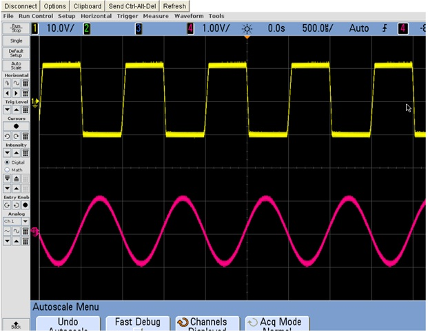

The capacitor is periodically charged and discharged between 2/3 Vcc and 1/3 Vcc respectively. The time during which the capacitor charges from 1/3 Vcc to 2/3 Vcc is equal to the time the output remains high and is given by:
tc = 0.693 ( RA + RB ) C
Where RA and RB are in ohms and C is in Farads. Similarly the time during which the capacitor discharges from 2/3 Vcc to 1/3 Vcc is equal to the time the output is low and is given by:
td = 0.693 RB C
Thus the total time period of the output waveform is :
T = tc + td = 0.693 ( RA + 2 RB ) C
Therefore the frequency of oscillation is:
The output frequency, f is independent of the supply voltage Vcc.

Fig.1 Shows Input signal (Red) and Output (Yellow)
Fig.2 Shows Input signal (Red) and Output (Yellow)